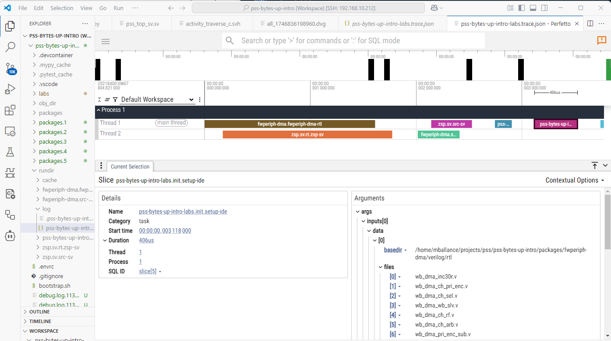

Command reference¶
DV Flow Manager (dfm) - A dataflow-based build system for silicon design and verification.
usage: dfm [-h] [--log-level {NONE,INFO,DEBUG}] [-D NAME=VALUE]
[-P FILE_OR_JSON] [--package-map FILE]
{graph,run,complete,show,cache,validate,context,agent,mcp,daemon,worker,util}
...
Named Arguments¶
- --log-level
Possible choices: NONE, INFO, DEBUG
Configures debug level [INFO, DEBUG]
- -D
Parameter override. For package params: -D param=value. For task params: -D task.param=value or -D pkg.task.param=value. Lists auto-convert: -D top=counter becomes [‘counter’]. May be used multiple times
Default:
[]- -P, --param-file
JSON file path or inline JSON string for complex parameter types. Inline example: -P ‘{“tasks”: {“build”: {“top”: [“counter”]}}}’. CLI -D options take precedence over -P values
- --package-map
Package-map file (name -> flow file) for resolving imports by name. May be used multiple times
Default:
[]
Sub-commands¶
graph¶
Generates the graph of a task
dfm graph [-h] [-f FORMAT] [--root ROOT] [-c CONFIG] [-o OUTPUT]
[-D NAME=VALUE] [--show-params] [--json]
[task]
Positional Arguments¶
- task
task to graph
Named Arguments¶
- -f, --format
Specifies the output format
Default:
'dot'- --root
Specifies the root directory for the flow
- -c, --config
Specifies the active configuration for the root package
- -o, --output
Specifies the output file
Default:
'-'- -D
Parameter override; may be used multiple times
Default:
[]- --show-params
Show parameter values in node labels
Default:
False- --json
Output graph wrapped in JSON with markers for programmatic consumption
Default:
False
run¶
run a flow
dfm run [-h] [-j J] [--clean] [--base-rundir PATH] [-f] [-v] [--root ROOT]
[-c CONFIG] [-u {log,progress,progressbar,tui}] [-D NAME=VALUE]
[-P FILE_OR_JSON] [--runner RUNNER] [--runner-opt KEY=VALUE]
[--override TARGET=REPLACEMENT] [--report DIR]
[tasks ...]
Positional Arguments¶
- tasks
tasks to run
Named Arguments¶
- -j
Specifies degree of parallelism. Uses all cores by default
Default:
-1- --clean
Cleans the rundir before running
Default:
False- --base-rundir
Reuse artifacts from a pre-built rundir. Tasks present in this directory are assumed up-to-date and not re-executed.
- -f, --force
Force all tasks to run, ignoring up-to-date status
Default:
False- -v, --verbose
Show all tasks including up-to-date ones
Default:
False- --root
Specifies the root directory for the flow
- -c, --config
Specifies the active configuration for the root package
- -u, --ui
Possible choices: log, progress, progressbar, tui
Console UI style (log, progress, progressbar, tui). Default: progress if terminal else log
- -D
Parameter override. For package params: -D param=value. For task params: -D task.param=value. May be used multiple times
Default:
[]- -P, --param-file
JSON file or inline JSON string (e.g., ‘{“tasks”: {…}}’)
- --runner
Runner backend: ‘local’ (in-process), ‘lsf’ (embedded LSF pool), or omit for auto-detect (daemon if running, else local)
- --runner-opt
Runner backend option (key=value). May be used multiple times
Default:
[]- --override
Override a task: TARGET=REPLACEMENT (e.g. pkg.Task=std.Null)
Default:
[]- --report
After the run, write a diagnostics bundle (per-task logs, markers, status) to DIR for publishing as a CI artifact.
complete¶
Print tab-completion candidates for task names
dfm complete [-h] [--root ROOT] [-c CONFIG] [prefix]
Positional Arguments¶
- prefix
Partial task name to complete
Default:
''
Named Arguments¶
- --root
Specifies the root directory for the flow
- -c, --config
Specifies the active configuration for the root package
show¶
Display and search packages, tasks, types, and tags
dfm show [-h] {packages,tasks,task,types,tags,package,project,skills} ...
Positional Arguments¶
- show_subcommand
Possible choices: packages, tasks, task, types, tags, package, project, skills
Sub-commands¶
packages¶
List and search available packages
dfm show packages [-h] [--search SEARCH] [--regex REGEX] [--tag TAG] [--json]
[-v] [-D NAME=VALUE] [-c CONFIG] [--root ROOT]
Named Arguments¶
- --search
Search by keyword in name, desc, and doc
- --regex
Search by regex pattern in desc and doc
- --tag
Filter by tag (format: TagType or TagType:field=value)
- --json
Output in JSON format
Default:
False- -v, --verbose
Show additional details
Default:
False- -D
Parameter override
Default:
[]- -c, --config
Specifies the active configuration
- --root
Specifies the root directory for the flow
tasks¶
List and search tasks
dfm show tasks [-h] [--search SEARCH] [--regex REGEX] [--tag TAG] [--json]
[-v] [-D NAME=VALUE] [-c CONFIG] [--root ROOT]
[--package PACKAGE] [--scope {root,export,local}]
[--produces PRODUCES]
Named Arguments¶
- --search
Search by keyword in name, desc, and doc
- --regex
Search by regex pattern in desc and doc
- --tag
Filter by tag (format: TagType or TagType:field=value)
- --json
Output in JSON format
Default:
False- -v, --verbose
Show additional details
Default:
False- -D
Parameter override
Default:
[]- -c, --config
Specifies the active configuration
- --root
Specifies the root directory for the flow
- --package
Filter tasks by package name
- --scope
Possible choices: root, export, local
Filter tasks by visibility scope
- --produces
Filter tasks by produces pattern (e.g., ‘type=std.FileSet,filetype=verilog’)
task¶
Display detailed information about a task
dfm show task [-h] [--needs [DEPTH]] [--json] [-v] [-D NAME=VALUE] [-c CONFIG]
[--root ROOT]
name
Positional Arguments¶
- name
Task name (e.g., std.FileSet)
Named Arguments¶
- --needs
Show dependency chain. Optional DEPTH limits levels (-1=unlimited)
- --json
Output in JSON format
Default:
False- -v, --verbose
Show additional details
Default:
False- -D
Parameter override
Default:
[]- -c, --config
Specifies the active configuration
- --root
Specifies the root directory for the flow
types¶
List and search data types
dfm show types [-h] [--search SEARCH] [--regex REGEX] [--tag TAG] [--json]
[-v] [-D NAME=VALUE] [-c CONFIG] [--root ROOT]
[--package PACKAGE] [--tags-only] [--data-items-only]
Named Arguments¶
- --search
Search by keyword in name, desc, and doc
- --regex
Search by regex pattern in desc and doc
- --tag
Filter by tag (format: TagType or TagType:field=value)
- --json
Output in JSON format
Default:
False- -v, --verbose
Show additional details
Default:
False- -D
Parameter override
Default:
[]- -c, --config
Specifies the active configuration
- --root
Specifies the root directory for the flow
- --package
Filter types by package name
- --tags-only
Show only tag types (deriving from std.Tag)
Default:
False- --data-items-only
Show only data item types (deriving from std.DataItem)
Default:
False
package¶
Display detailed information about a package
dfm show package [-h] [--json] [-v] [-D NAME=VALUE] [-c CONFIG] [--root ROOT]
name
Positional Arguments¶
- name
Package name (e.g., std)
Named Arguments¶
- --json
Output in JSON format
Default:
False- -v, --verbose
Show additional details
Default:
False- -D
Parameter override
Default:
[]- -c, --config
Specifies the active configuration
- --root
Specifies the root directory for the flow
project¶
Display current project structure
dfm show project [-h] [--imports] [--configs] [--json] [-v] [-D NAME=VALUE]
[-c CONFIG] [--root ROOT]
Named Arguments¶
- --imports
Show imported packages
Default:
False- --configs
Show available configurations
Default:
False- --json
Output in JSON format
Default:
False- -v, --verbose
Show additional details
Default:
False- -D
Parameter override
Default:
[]- -c, --config
Specifies the active configuration
- --root
Specifies the root directory for the flow
skills¶
List and query agent skills (DataSet types tagged with AgentSkillTag)
dfm show skills [-h] [--search SEARCH] [--package PACKAGE] [--full] [--json]
[-v] [-D NAME=VALUE] [-c CONFIG] [--root ROOT]
[name]
Positional Arguments¶
- name
Skill name to show details for (e.g., std.AgentSkill)
Named Arguments¶
- --search
Search skills by keyword in name, desc, and skill_doc
- --package
Filter skills by package name
- --full
Show full skill documentation (with specific skill)
Default:
False- --json
Output in JSON format
Default:
False- -v, --verbose
Show additional details
Default:
False- -D
Parameter override
Default:
[]- -c, --config
Specifies the active configuration
- --root
Specifies the root directory for the flow
cache¶
Cache management commands
dfm cache [-h] {init} ...
Positional Arguments¶
- cache_subcommand
Possible choices: init
Sub-commands¶
init¶
Initialize a cache directory
dfm cache init [-h] [--shared] cache_dir
Positional Arguments¶
- cache_dir
Path to cache directory
Named Arguments¶
- --shared
Create a shared cache for team use with group permissions
Default:
False
validate¶
Validate flow.yaml files for errors and warnings
dfm validate [-h] [--json] [-D NAME=VALUE] [-c CONFIG] [--root ROOT]
[flow_file]
Positional Arguments¶
- flow_file
Flow file to validate (default: auto-detect)
Named Arguments¶
- --json
Output in JSON format for programmatic consumption
Default:
False- -D
Parameter override
Default:
[]- -c, --config
Specifies the active configuration
- --root
Specifies the root directory for the flow
context¶
Output comprehensive project context for LLM agent consumption
dfm context [-h] [--json] [--imports] [--installed] [-v] [-D NAME=VALUE]
[-c CONFIG] [--root ROOT]
Named Arguments¶
- --json
Output in JSON format (default)
Default:
False- --imports
Include detailed information about imported packages
Default:
False- --installed
Include list of all installed packages
Default:
False- -v, --verbose
Include additional details (docs, params)
Default:
False- -D
Parameter override
Default:
[]- -c, --config
Specifies the active configuration
- --root
Specifies the root directory for the flow
agent¶
Launch an AI assistant with DV Flow context
dfm agent [-h] [-a {copilot,codex,mock,native}] [-m MODEL] [--root ROOT]
[-c CONFIG] [-D NAME=VALUE] [--config-file CONFIG_FILE] [--json]
[--clean] [--ui {log,progress,progressbar,tui}]
[--approval-mode {never,auto,write}] [--trace]
[tasks ...]
Positional Arguments¶
- tasks
Task references to use as context (skills, personas, tools, references)
Named Arguments¶
- -a, --assistant
Possible choices: copilot, codex, mock, native
Specify which assistant to use (default: native if no subprocess CLI detected)
- -m, --model
Specify the AI model to use
- --root
Specifies the root directory for the flow
- -c, --config
Specifies the active configuration for the root package
- -D
Parameter override; may be used multiple times
Default:
[]- --config-file
Output assistant config file instead of launching (for debugging)
- --json
Output context as JSON instead of launching assistant
Default:
False- --clean
Clean rundir before executing tasks
Default:
False- --ui
Possible choices: log, progress, progressbar, tui
Select UI mode for task execution
- --approval-mode
Possible choices: never, auto, write
Tool approval mode: never (run all), auto/write (prompt before write/shell tools)
- --trace
Enable agent tracing to ~/.dfm/traces/ (or trace_dir in config)
Default:
False
mcp¶
Start DFM as an MCP server (stdio) for Claude Desktop, Cursor, VS Code, etc.
dfm mcp [-h] [--root ROOT] [-c CONFIG] [tasks ...]
Positional Arguments¶
- tasks
Task references to use as context (skills, personas, tools, references)
Named Arguments¶
- --root
Specifies the root directory for the flow
- -c, --config
Specifies the active configuration for the root package
daemon¶
Manage the background daemon (worker pool manager)
dfm daemon [-h] {start,stop,status} ...
Positional Arguments¶
- daemon_subcmd
Possible choices: start, stop, status
Sub-commands¶
start¶
Start the daemon
dfm daemon start [-h] [--root ROOT] [--runner RUNNER] [--pool-size POOL_SIZE]
[--monitor] [--foreground]
Named Arguments¶
- --root
Project root directory
- --runner
Runner backend (e.g. local, lsf)
- --pool-size
Maximum number of workers
- --monitor
Attach monitor TUI after starting
Default:
False- --foreground
Run daemon in foreground (default is background)
Default:
False
stop¶
Stop the daemon
dfm daemon stop [-h] [--root ROOT]
Named Arguments¶
- --root
Project root directory
status¶
Show daemon status
dfm daemon status [-h] [--root ROOT] [--json]
Named Arguments¶
- --root
Project root directory
- --json
Output in JSON format
Default:
False
worker¶
Run as a worker process (internal, used by daemon)
dfm worker [-h] --connect CONNECT [--worker-id WORKER_ID]
[--resource-class RESOURCE_CLASS] [--lsf-job-id LSF_JOB_ID]
Named Arguments¶
- --connect
Daemon address to connect to (host:port)
- --worker-id
Worker ID (auto-generated if not specified)
- --resource-class
Resource class this worker provides
Default:
''- --lsf-job-id
LSF job ID (if launched via bsub)
Default:
''
util¶
Internal utility command
dfm util [-h] cmd ...
Positional Arguments¶
- cmd
- args
For LLM agents: See the skill file at: /home/runner/work/dv-flow-mgr/dv-flow-mgr/src/dv_flow/mgr/share/skills/dv-flow-manager/SKILL.md
Commands Overview¶
DV Flow Manager provides several commands for working with flows:
run: Execute tasks in a flow
show: Display information about tasks
agent: Launch AI assistants with DV Flow context
context: Output project context for LLM agents
graph: Generate visual task dependency graphs
util: Internal utility commands
Common Options¶
These options are available across multiple commands:
-D NAME=VALUEOverride parameter values from the command line. Can be specified multiple times to override multiple parameters.
dfm run build -D debug=true -D optimization=O3
-D(and the-PJSON parameter file) are explained in full – syntax, targeting, and resolution order – in Parameters and Configuration.--package-map FILEResolve imports by name using a package-map file (
name -> flow file). May be specified multiple times; earlier maps take precedence on name collisions. A package map can also be supplied via thepackage-map:key in a flow file or theDV_FLOW_PACKAGE_MAPenvironment variable (colon-separated paths). See Packages for the file format and precedence rules.dfm --package-map deps/flow-packages.yaml run build
-c, --config NAMESelect a package configuration to use. Configurations allow switching between different build modes, tool chains, or deployment targets.
dfm run build -c debug
--root PATHSpecify the root directory for the flow. By default, dfm searches upward from the current directory for a flow.yaml file.
dfm run build --root /path/to/project
Run Command¶
Execute one or more tasks in a flow.
dfm run [OPTIONS] [TASKS...]
If no tasks are specified, dfm lists available tasks in the package.
Run Options¶
-j NSet the degree of parallelism (number of concurrent tasks). Default is to use all available CPU cores. Use
-j 1for sequential execution.dfm run build -j 4
--cleanRemove the rundir directory before starting the build. Forces a complete rebuild of all tasks.
dfm run build --clean
-f, --forceForce all tasks to run, ignoring up-to-date checks. Unlike
--clean, this preserves the rundir but marks all tasks as needing execution.dfm run test -f
-v, --verboseShow all tasks including those that are up-to-date. By default, only tasks that execute are shown.
dfm run build -v
-u, --ui {log,progress,tui}Select the console user interface style:
log: Plain text output (default for non-terminals)
progress: Progress bars and live updates (default for terminals)
tui: Full-screen text user interface
dfm run build -u tui
--override TARGET=REPLACEMENTReplace a task in the graph with another task for this run. Can be specified multiple times. Overrides applied via
--overridetake precedence over config-level and package-level overrides.dfm run build --override sim_pkg.Compile=std.Null
Multiple overrides:
dfm run build --override pkg.TaskA=std.Null --override pkg.TaskB=std.Null
--runner BACKENDRunner backend to use.
localruns tasks in-process. Other backends (e.g.lsf) require a running daemon. If omitted, auto-detects whether a daemon is running and delegates to it if so, otherwise uses local execution.dfm run build --runner local
--base-rundir PATHReuse compiled artifacts from a previous build’s rundir. Tasks that completed successfully in the base-rundir are satisfied without re-execution; their output is reconstructed from saved data and file paths are rewritten to reference the base-rundir. The base-rundir is treated as read-only and trusted.
This is essential for regression workflows where a build is performed once and many test runs reuse the compiled artifacts.
# Build once dfm run build # Run tests reusing the build (no recompilation) dfm run test_a --base-rundir /path/to/build/rundir dfm run test_b --base-rundir /path/to/build/rundir
The environment variable
DFM_BASE_RUNDIRis exported to child processes when this option is set.See Incremental Builds for full details on how base-rundir satisfaction works.
--report DIRAfter the run completes, write a self-contained diagnostics bundle to
DIR(per-task logs, markers, and status). This is intended for CI, where the rundir is ephemeral: publishDIRas a build artifact to retain diagnostics after the job ends.dfm run sim.regress --report build/dfm-report
See Run Report Bundle for the bundle layout and
report.jsonschema.The report is assembled from the per-task
exec_data.jsoneach task writes to the shared rundir, so it works for any execution backend (local, daemon, or remote runners such as--runner lsf).
Run Examples¶
Build a single task:
dfm run sim-image
Build multiple tasks:
dfm run compile test lint
Force rebuild with 4 parallel jobs:
dfm run all --clean -j 4
Run with debug configuration:
dfm run build -c debug -D trace=true
Show Command¶
The show command provides discovery and inspection of packages, tasks, types, and tags. It supports both human-readable and machine-parseable (JSON) output for Agent consumption.
dfm show [SUBCOMMAND] [OPTIONS]
Sub-Commands¶
The show command supports the following sub-commands:
packages - List and search available packages
tasks - List and search tasks across packages
task <name> - Display detailed information about a specific task
types - List data types and tags
tags - List tag types and their usage
package <name> - Display detailed information about a package
project - Display current project structure
Common Options¶
These options are available across most show sub-commands:
--search KEYWORDSearch by keyword in name, description, and documentation fields. Case-insensitive substring matching.
--regex PATTERNSearch by Python regex pattern in description and documentation.
--tag TAGFilter by tag. Format:
TagTypeorTagType:field=value.--jsonOutput in JSON format for programmatic consumption by Agents.
-v, --verboseShow additional details including full documentation and parameters.
Show Packages¶
List and search available packages.
dfm show packages [--search KEYWORD] [--json] [-v]
Examples:
# List all packages
dfm show packages
# Search for verification packages
dfm show packages --search verification
# JSON output for scripting
dfm show packages --json
Show Tasks¶
List and search tasks across all packages.
dfm show tasks [--package PKG] [--scope SCOPE] [--produces PATTERN] [--search KEYWORD] [--json]
Options:
--package PKGFilter tasks to a specific package.
--scope {root,export,local}Filter tasks by visibility scope.
--produces PATTERNFilter tasks by produces pattern. Use comma-separated key=value pairs to specify the pattern. All specified attributes must match (AND logic), but tasks can have additional attributes (subset matching).
# Find tasks that produce std.FileSet dfm show tasks --produces "type=std.FileSet" # Find tasks that produce verilog files dfm show tasks --produces "type=std.FileSet,filetype=verilog" # Find vendor-specific outputs dfm show tasks --produces "type=std.FileSet,filetype=verilog,vendor=synopsys"
Examples:
# List all tasks
dfm show tasks
# Search for file-related tasks
dfm show tasks --search file
# List tasks in std package
dfm show tasks --package std
# Find tasks that produce FileSet outputs
dfm show tasks --produces "type=std.FileSet"
Show Task Detail¶
Display detailed information about a specific task.
dfm show task <name> [--needs [DEPTH]] [--json] [-v]
Options:
--needs [DEPTH]Show the needs (dependency) chain for this task. Optional DEPTH limits traversal levels (-1 or omitted for unlimited).
Examples:
# Show task details
dfm show task std.FileSet
# Show task with full needs chain
dfm show task myproject.build --needs
# Show needs chain limited to 2 levels
dfm show task myproject.build --needs 2
# JSON output with full details
dfm show task std.FileSet --json
The task detail output includes:
Name and Package: Full task name and containing package
Base: Task inheritance (uses relationship)
Scope: Visibility (root, export, local)
Description and Documentation: Task purpose and usage
Parameters: Task parameters with types and defaults
Produces: Output dataset patterns this task creates (see Dataflow & Produces)
Consumes: Input dataset patterns this task accepts
Direct Needs: Immediate dependencies
Example output showing produces:
Task: my_flow.VerilogCompiler
Package: my_flow
Base: -
Scope: -
Description:
Compiles Verilog RTL with optimization
Parameters:
optimization str O2 Optimization level
Produces:
- type=std.FileSet, filetype=verilog, optimization=O2
Direct Needs:
- my_flow.SourceFiles
Show Types¶
List data types and tag types.
dfm show types [--tags-only] [--data-items-only] [--search KEYWORD]
Options:
--tags-onlyShow only tag types (types deriving from std.Tag).
--data-items-onlyShow only data item types (types deriving from std.DataItem).
Show Package Detail¶
Display detailed information about a specific package.
dfm show package <name> [--json] [-v]
Show Project¶
Display information about the current project.
dfm show project [--imports] [--configs] [--json] [-v]
Options:
--importsShow detailed import information.
--configsShow available configurations.
Legacy Mode¶
For backward compatibility, the following legacy invocations are supported:
# List project tasks (equivalent to: dfm show tasks --package <project>)
dfm show
# Show task with dependency tree (legacy behavior)
dfm show <task> -a
Validate Command¶
The validate command checks your flow definition for errors and potential issues, including dataflow compatibility between tasks.
dfm validate [--json]
The validator performs the following checks:
Syntax Validation: YAML/DV parsing and schema validation
Undefined References: Detects references to non-existent tasks
Circular Dependencies: Detects circular task dependencies
Dataflow Compatibility: Checks produces/consumes patterns between connected tasks
Unused Tasks: Warns about tasks that are defined but never referenced
Validation Output¶
Errors prevent the workflow from executing:
Parse errors in flow definition
Undefined task references
Circular dependencies
Warnings indicate potential issues but allow execution:
Dataflow mismatches (produces/consumes incompatibility)
Unused tasks
Missing optional declarations
Example output:
Package: my_flow
Tasks: 8
Types: 3
Warnings (1):
WARNING: Task 'Simulator' consumes [{'type': 'std.FileSet', 'filetype': 'vhdl'}]
but 'VerilogCompiler' produces [{'type': 'std.FileSet', 'filetype': 'verilog'}].
No consume pattern matches any produce pattern.
✓ Validation passed
(1 warning(s))
JSON Output¶
Use --json for programmatic consumption:
dfm validate --json
{
"valid": true,
"errors": [],
"warnings": [
{
"type": "DataflowMismatch",
"message": "Task 'Simulator' consumes ... but 'VerilogCompiler' produces ...",
"producer": "my_flow.VerilogCompiler",
"consumer": "my_flow.Simulator"
}
],
"info": [
{
"type": "PackageInfo",
"name": "my_flow",
"task_count": 8,
"type_count": 3
}
],
"error_count": 0,
"warning_count": 1
}
Dataflow Validation¶
The validator checks that produces patterns from producer tasks match the consumes patterns of consumer tasks. See Dataflow & Produces for details on compatibility rules.
Compatibility Rules:
Consumer with
consumes: allaccepts any producesProducer with no produces declared is assumed compatible
OR Logic: If ANY consume pattern matches ANY produce pattern, the dataflow is valid
Pattern matching uses subset logic (producer can have extra attributes)
When to fix warnings:
The consumer truly needs different data than what’s produced
There’s a typo in task names or pattern attributes
You want strict validation for production workflows
When to accept warnings:
Outputs are dynamic and not known until runtime
The mismatch is intentional (flexible workflow)
You’re in early development/prototyping
See Also¶
Dataflow & Produces - Complete dataflow and produces documentation
dfm show task <name>- View task produces/consumes patterns
Agent Command¶
Launch an AI assistant with DV Flow context, including skills, personas, tools, and references.
dfm agent [OPTIONS] [TASKS...]
The agent command configures and launches an AI assistant (GitHub Copilot CLI, OpenAI Codex, etc.) with project-specific context. When you specify task references, dfm evaluates those tasks and their dependencies to collect agent resources (skills, personas, tools, references), then generates a comprehensive system prompt for the AI assistant.
Agent Options¶
-a, --assistant {copilot,codex,mock}Specify which AI assistant to use. If not specified, dfm auto-detects the available assistant by checking for installed tools in this order: copilot, codex.
dfm agent PiratePersona --assistant copilot
-m, --model MODELSpecify the AI model to use. The format depends on the assistant:
Copilot: Model names like
gpt-4,gpt-3.5-turboCodex: OpenAI model identifiers
dfm agent PiratePersona --model gpt-4
--cleanClean the rundir before executing tasks. Useful when you want to ensure fresh evaluation of all agent resource tasks.
dfm agent MyPersona --clean
--ui {log,progress,tui}Select UI mode for task execution during context building:
log: Plain text output
progress: Progress bars (default for terminals)
tui: Full-screen interface
dfm agent MyPersona --ui progress
--jsonOutput the collected context as JSON instead of launching the assistant. Useful for debugging or integration with custom tools.
dfm agent PiratePersona --json
--config-file FILEWrite the system prompt to FILE instead of launching the assistant. Useful for reviewing what context will be provided to the agent.
dfm agent PiratePersona --config-file context.md
Agent Resources¶
The agent command recognizes four types of agent resources defined in your flow:
- AgentSkill
A capability or knowledge domain that the agent should possess. Skills are typically documented in markdown files that describe commands, APIs, or domain-specific knowledge.
tasks: - local: SwordPlaySkill uses: std.AgentSkill desc: Playbook of sword fighting moves with: files: - "${{ srcdir }}/sword_skill.md"
- AgentPersona
A character or role that the agent should adopt. Personas can depend on skills to combine capabilities with personality.
tasks: - local: PiratePersona uses: std.AgentPersona needs: SwordPlaySkill desc: | I'm a crusty pirate with a tankard of rum and a parrot on me shoulder. If you're feeling feisty, I'll show you my skill at fighting
- AgentTool
An MCP (Model Context Protocol) server or external tool that the agent can invoke.
tasks: - local: FileSystemTool uses: std.AgentTool desc: File system operations with: command: mcp-server-filesystem args: ["--root", "${{ rootdir }}"]
- AgentReference
Documentation or reference material that the agent should consult.
tasks: - local: APIReference uses: std.AgentReference desc: Project API documentation with: files: - "${{ srcdir }}/api_docs.md"
Agent Examples¶
Launch agent with a persona:
dfm agent PiratePersona
This evaluates the PiratePersona task and all its dependencies (like SwordPlaySkill), generates a system prompt with the persona description and skill documentation, then launches the configured AI assistant.
Launch with multiple contexts:
dfm agent PiratePersona CodingSkill TestingSkill
Combines multiple personas and skills into a single agent session.
Preview context without launching:
dfm agent PiratePersona --config-file preview.md
cat preview.md
Debug context collection:
dfm agent PiratePersona --json | jq
Use specific model:
dfm agent PiratePersona --model gpt-4 --assistant copilot
Force fresh evaluation:
dfm agent MyPersona --clean
Agent Workflow¶
When you run dfm agent, the following steps occur:
Task Resolution: Resolve task references to task definitions
Graph Building: Build dependency graph for all referenced tasks
Task Execution: Execute tasks to evaluate agent resources
Resource Collection: Extract skills, personas, tools, and references
Prompt Generation: Generate comprehensive system prompt with:
Project information
Available dfm commands
Skill documentation
Persona descriptions
Reference materials
Tool configurations
Assistant Launch: Launch AI assistant with context in interactive mode
Context Command¶
Output project context information for LLM agents.
dfm context [OPTIONS]
The context command generates comprehensive information about your DV Flow Manager project in a format optimized for consumption by AI assistants. This is useful for providing project awareness to LLM tools.
Context Options¶
--root PATHSpecify the root directory for the flow.
Output includes:
Project name and description
Package structure and imports
Available tasks with descriptions
Type definitions
Configuration options
Example:
dfm context
Graph Command¶
Generate a visual representation of task dependencies.
dfm graph [OPTIONS] [TASK]
The graph command creates a dependency graph in various output formats.
Graph Options¶
-f, --format {dot}Specify the output format. Currently supports:
dot: GraphViz DOT format (default)
dfm graph build -f dot
-o, --output FILESpecify the output file. Use
-for stdout (default).dfm graph build -o build_graph.dot
Graph Examples¶
Generate a graph and visualize with GraphViz:
dfm graph build -o build.dot
dot -Tpng build.dot -o build.png
Generate and display in one command:
dfm graph build | dot -Tpng | display
UI Modes¶
DV Flow Manager provides three different console UI modes for the run command:
Log Mode¶
Plain text output showing task execution. Best for:
Non-interactive environments (CI/CD)
Log file capture
Debugging with verbose logging enabled
Output format:
>> [1] Task my_pkg.compile
Compiling 10 files...
<< [1] Task my_pkg.compile (success) 2.45s
Progress Mode¶
Live updating progress display with progress bars. Best for:
Interactive terminal sessions
Monitoring long-running builds
Parallel task visualization
Shows:
Active tasks with progress bars
Completed task count
Estimated time remaining
Real-time task status updates
TUI Mode¶
Full-screen text user interface. Best for:
Complex flows with many tasks
Detailed monitoring of parallel execution
Interactive navigation of task output
Features:
Scrollable task list
Task filtering and search
Log viewing per task
Status summaries
Select UI mode with the -u flag or let dfm auto-select based on terminal
capabilities.
Trace Output¶
DV Flow Manager generates execution traces in Google Event Trace Format, compatible with the Perfetto trace viewer and Chrome’s about:tracing.
Trace files are automatically created in the log directory as:
log/<root_task>.trace.json
Viewing Traces¶
Using Perfetto UI (recommended):
Visit https://ui.perfetto.dev/
Click “Open trace file”
Load the .trace.json file
Using Chrome:
Navigate to chrome://tracing
Click “Load” and select the trace file
Trace Information¶
Traces include:
Task execution timeline
Parallel execution visualization
Task duration and scheduling
Dependencies and dataflow
Execution status and results
Use traces to:
Identify bottlenecks
Optimize parallelism
Debug scheduling issues
Understand execution patterns
Run Report Bundle¶
When dfm run is invoked with --report DIR, a diagnostics bundle is
written to DIR after the run completes. Logs and markers are normally
written into the per-task rundir, which is ephemeral in CI; the report bundle
gathers the small, always-useful diagnostic subset into one location that a CI
job can publish as an artifact.
Unlike uploading the whole rundir (which can contain large build/simulation artifacts), the bundle leads with a structured status/marker manifest and includes per-task logs as drill-down.
The bundle is assembled from the exec_data.json that each task writes into
its rundir (status, markers, and the name of its logfile). Because this is the
same on-disk record used for up-to-date checks, the report is backend-agnostic:
it works identically for local, daemon, and remote (e.g. LSF) execution, and a
report can even be regenerated from a preserved rundir after the fact.
Bundle Layout¶
<report-dir>/
report.json # machine-readable manifest (primary surface)
report.md # human-readable summary (CI job-summary friendly)
markers.jsonl # all markers flattened, one JSON object per line
logs/
<task-name>.log # per-task logs, copied from each task's rundir
report.json Schema¶
{
"schema": "dvflow-report/1",
"root": "sim.regress",
"status": 1,
"generated_unix": 1750464000,
"counts": {
"tasks_total": 42,
"tasks_failed": 1,
"markers": { "info": 3, "warning": 5, "error": 2 }
},
"tasks": [
{
"name": "sim.build",
"status": 0,
"changed": true,
"cache_hit": false,
"rundir": "/abs/path/rundir/sim.build",
"log": "logs/sim.build.log",
"markers": [
{ "severity": "error", "msg": "...",
"loc": { "path": "...", "line": 12, "pos": 4 } }
]
}
]
}
Notes:
statusis the number of tasks that failed (0 means success).tasksincludes every task that ran, including up-to-date and cache-hit tasks. Thelogfield is omitted (null) when a task produced no logfile (e.g. pure-Python tasks).Each task’s
markersare also aggregated intomarkers.jsonlwith an added"task"field, for easy log-style scanning.
CI Usage¶
Publish the bundle as a build artifact. For GitHub Actions:
- name: Run flow
run: dfm run sim.regress --report build/dfm-report
- name: Upload report
if: always()
uses: actions/upload-artifact@v4
with:
name: dfm-report
path: build/dfm-report
The if: always() ensures the report is uploaded even when the run fails,
which is exactly when the logs and markers are most useful.
Output Directory Structure¶
DV Flow Manager creates an output directory structure that mirrors the task graph being executed. Each top-level task has a directory within the run directory. Compound tasks have a nested directory structure.
There are two top-level directory that always exist:
cache - Stores task memento data and other cross-run artifacts
log - Stores execution trace and log files
Each task directory contains some standard files:
<task_name>.exec_data.json - Information about the task inputs, outputs, and executed commands.
logfiles - Command-specific log files
Viewing Task Execution Data¶
After a run has completed, the log directory will contain a JSON-formatted execution trace file named <root_task>.trace.json. This file is formatted in Google Event Trace Format, and can be processed by tools from the Perfetto project.
An execution is shown in the Perfetto UI below. In addition to seeing information about how tasks executed with respect to each other, data about individual tasks can be seen.

Common Patterns¶
Here are some common command patterns for typical workflows:
Quick incremental build:
dfm run
Clean build for release:
dfm run all --clean -c release
Debug single task:
dfm run problematic_task -f -j 1 -u log
Monitor long build:
dfm run all -u tui
Check what would run:
dfm show target_task -a
Override parameters for testing:
dfm run test -D test_name=smoke -D seed=42
Stub out expensive tasks for fast iteration:
dfm run test -c fast
# or, ad-hoc from the command line:
dfm run test --override sim_pkg.Compile=std.Null
Generate documentation graph:
dfm graph all -o project.dot
dot -Tsvg project.dot -o project.svg